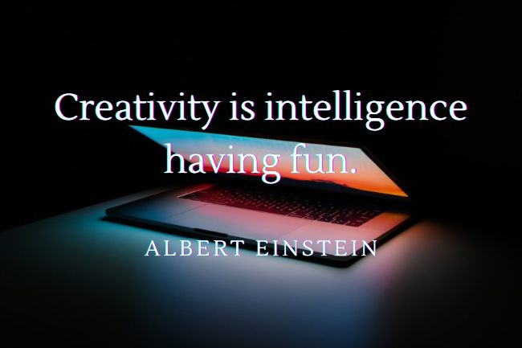
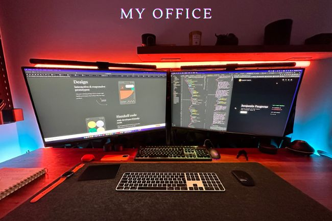

<div class="load-data">
    <div class="popup-main-content">
        <div class="container">
            <div class="blog-details">
                <div class="row">
                    <div class="col-md-12">
                        <div class="blog-info">
                            <div class="tag mt-0">
                                <span>18/Oct/2022 - Introduction to myself</span>
                            </div>
                            <h4 class="blog-details-title">Why I decided to go Freelance? And why you should pick me? 🙋🏻‍♂️</h4>
                        </div>
                    </div>
                    <div class="col-lg-12">
                        <p class="mt-30">
                            From coding to marketing, my journey has been quite a ride. I
                            remember the days when I used to code in HTML and CSS and PHP, and
                            boy, it wasn't easy. Back then, (in 2011 when I was 21 years old
                            😅) going freelance was like finding a needle in a haystack. But
                            now, things have changed, and so have I.
                          </p></p>
                        <p class="mt-30">After moving to Canada to study business administration, I fell in love with marketing. It was like a match made in heaven, and I knew I had to mix my knowledge in coding with my newfound love for marketing. And voila, I became a Business graduate who could cut costs and skyrocket companies to success.</p>

                        <p class="mt-30">But after helping more than 6 companies to boost their marketing game, I decided to take a leap of faith and go solo. Yes, you heard it right, I quit my job and became a freelance web developer and UI/UX designer. And boy, what an exciting journey!</p>

                        <p class="mt-30">The best part about going solo is that I get to work with amazing business owners who trust me with their websites. I mean, who wouldn't want a unique responsive website with a creative interface, am I right? </p>

                        <div class="row">
                            <div class="col-md-6">
                                
                            </div>
                            <div class="col-md-6">
                                
                            </div>
                        </div>
                        <div class="blockquote">
                            <p>“And if you're looking for a customer conversion platform, well, look no further, because I am your guy.”</p>
                        </div>
                        <!-- /blockquote -->

                        <h3 class="blog-details-sec-title">Why picking me?</h3>
                        <p class="mt-30">I take my profession very seriously and approach my work with a high level of professionalism and rigor. Working closely with world-class doctors has instilled in me the importance of using the best resources available and has helped me to develop a reputation as someone who can be relied upon. I understand the value of hard work and dedication, and I am determined to gain the trust and respect of my clients.
                        </p>

                        <p class="mt-30">My ultimate goal is to establish my own agency and build a team of like-minded professionals. However, I am aware that this will require a lot of hard work and effort, and I am willing to roll up my sleeves and put in the necessary work to make it happen. I am confident that my passion and commitment to creating the best websites out there will help businesses to elevate their marketing game and reach new heights of success.
                        </p>

                        <p class="mt-30">In conclusion, I am on a mission to make a difference in the world of website design and marketing. I believe that with my dedication and hard work, I can help businesses to achieve their goals and reach their full potential. If you want to join me on this amazing journey, just give me a call. I promise it'll be fun, and who knows, we might just create the next big thing together.</p>
                    </div>

                    <div class="col-md-12">
                        <div class="divider"></div>
                        <!-- /divider -->
                    </div>
                    
                    <div class="col-md-12">
                        <div class="blog-details-nav d-flex justify-content-between">
                            
                            <div class="text-right">
                                <a class="blog-link" href="blog-details-02.html">Difference between web design and web development. <small>NEXT POST</small></a>
                            </div>
                        </div>
                        <!-- /portfolio-details-nav -->
                    </div>
                </div>
            </div>
            <!-- /blog-details -->
        </div>
    </div>
</div>